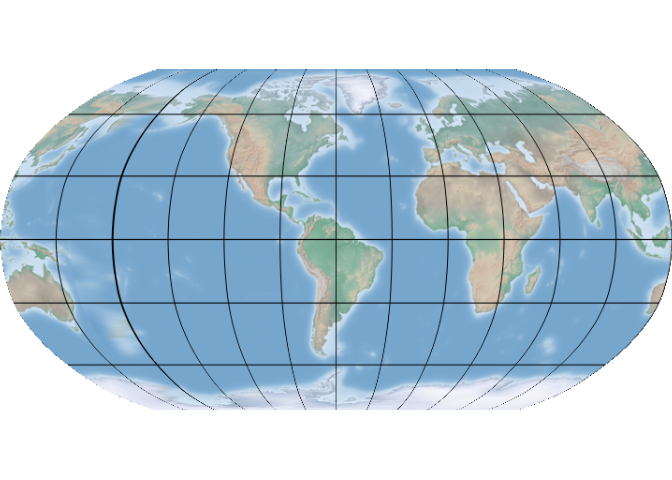

The goal of projWiz is to create an R version of Projection Wizard, which is an interactive web application helping select an appropriate map projection.
Please note that the projection generated by this package largely depends on the geo-dataset you provide. Therefore the projection can be highly customized, and may not be suitable for large-scale projects or formal collaborations (official projections are recommended in such cases). However, for personal map-making seeking to maintain accuracy and convenience, projWiz could work.
Installation
You can install the development version of somepackage from GitHub with:
# install.packages("devtools")
devtools::install_github("sToney239/projWiz")Example
You can quickly obtain a proper projection for a region using the following code:
library(projWiz)
new_proj = proj_equal_area(spData::alaska)
># ## North-south extent
># ## Select Transverse cylindrical equal area projection
new_proj
># [1] "+proj=tcea +lon_0=-179.683609 +datum=WGS84 +units=m +no_defs"Messages starting with ## indicate how the final projection is selected. The output will be a PROJ4 or WKT string, which can be used with GIS packages like sf. You can then reproject your data as follows:
sf::st_transform(spData::alaska, new_proj)
># Simple feature collection with 1 feature and 6 fields
># Geometry type: MULTIPOLYGON
># Dimension: XY
># Bounding box: xmin: -533012.6 ymin: 5697401 xmax: 2784099 ymax: 8226065
># Projected CRS: +proj=tcea +lon_0=-179.683609 +datum=WGS84 +units=m +no_defs
># GEOID NAME REGION AREA total_pop_10 total_pop_15
># 1 02 Alaska West 1718925 [km^2] 691189 733375
># geometry
># 1 MULTIPOLYGON (((31820.36 57...This is not an ideal example as there’s an official projection for Alaska, but you can apply this method to any area of interest.
Additionally, you can modify the central longitude of the world map using the proj_world function. This function requires a projection shorthand name (you can find in the world_proj_list data within the package), and the central longitude parameter.
central_longitude = -60
selected_world_proj_type = world_proj_list$compromise$round_boudnary$Natural_Earth
new_world_proj = proj_world(selected_world_proj_type, central_longitude)
rnaturalearth::countries110 |>
sf::st_break_antimeridian(central_longitude) |>
sf::st_transform(new_world_proj) |>
ggplot2::ggplot() +
ggplot2::geom_sf() +
ggplot2::geom_vline(xintercept = central_longitude)+
ggplot2::theme_minimal()